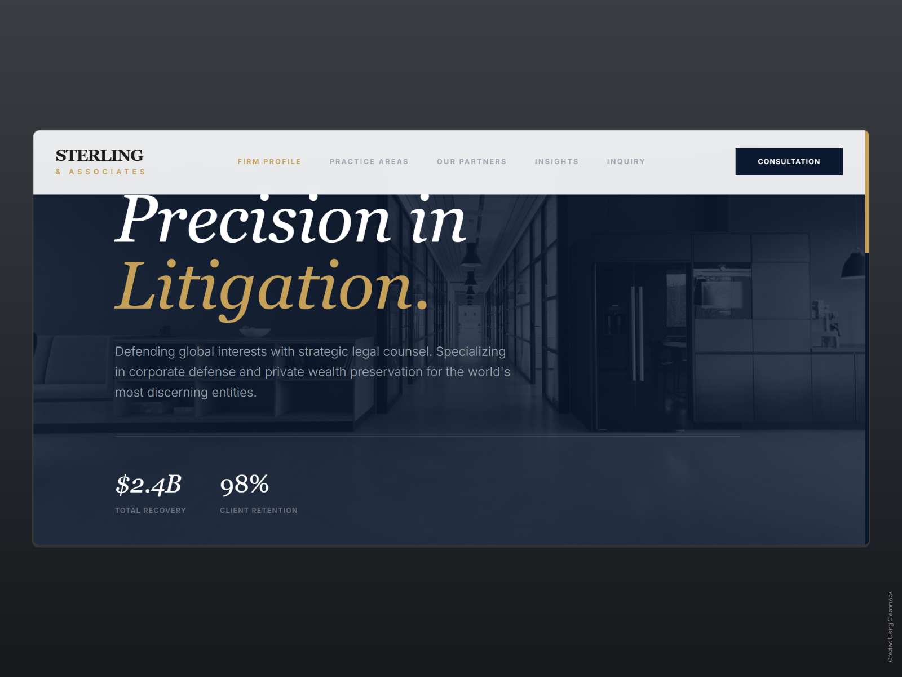
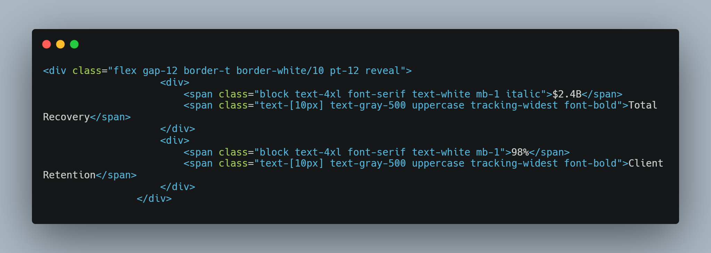

Project 01 / Case Study
Sector
Legal / High-End
Role
Lead Front-End
Tech Stack
Tailwind, Three.js
Year
2026

The objective was to create a digital presence for a prestigious law firm that balanced centuries of tradition with modern efficiency. The interface needed to feel heavy and grounded yet technically fast.
We implemented an architectural grid system. By using **Three.js** to render subtle 3D textures in the background, we gave the site a sense of "physical space." Every line of code was optimized for performance, ensuring that the heavy aesthetic didn't slow down the user experience.

Next Case Study